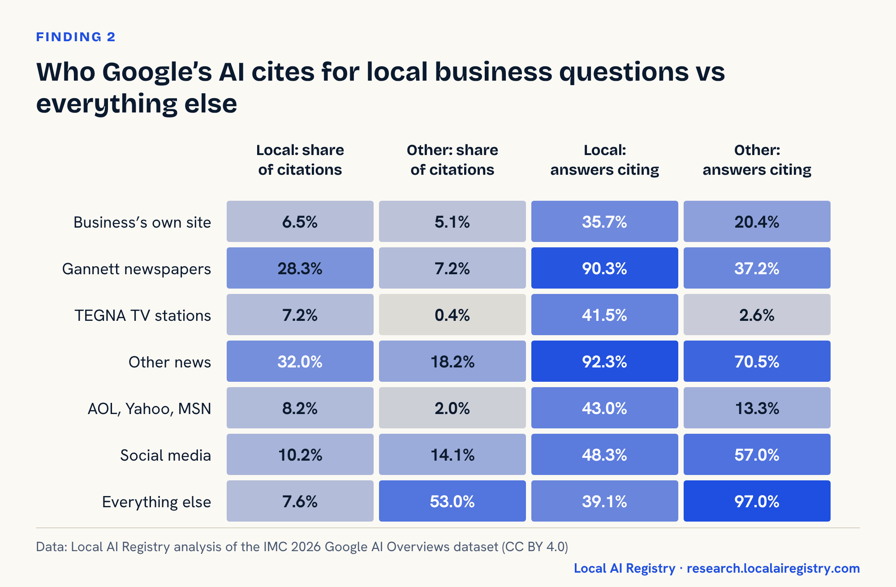

Local AI Registry Research
Original research from Local AI Registry’s dedicated local AI research team on how AI answers questions about local businesses, and what businesses should do about it.
New research · November 2026

The Local Answer Gap: what 7,583 Google AI answers reveal about AEO for local businesses
News outlets supplied 67.5% of citations in local AI answers. Businesses’ own websites supplied 6.5%. 29 original charts and a six-step local AEO playbook.